<style>
  /* ---------------- Travel Folio · Belle Époque ---------------- */
  .folio {
    --paper:        #f3e9d2;
    --paper-light:  #f9f2dd;
    --paper-deep:   #e9dcbe;
    --ink:          #2c1f12;
    --ink-soft:     #4a3826;
    --ink-mute:     #6b5740;
    --rule:         #b69970;
    --oxblood:      #7a2418;
    --navy:         #1f3a5f;
    --gold:         #a6802e;
    --shadow:       0 1px 0 rgba(0,0,0,0.06), 0 8px 18px rgba(60,40,20,0.08);
    color: var(--ink);
    background: var(--paper);
    font-family: "EB Garamond", "Cormorant Garamond", Georgia, "Times New Roman", serif;
    font-size: 18px;
    line-height: 1.55;
    margin: 0;
    padding: 0;
    background-image:
      radial-gradient(ellipse at 18% 14%, rgba(180,140,80,0.10) 0%, transparent 55%),
      radial-gradient(ellipse at 82% 86%, rgba(180,140,80,0.10) 0%, transparent 55%),
      url("data:image/svg+xml;utf8,<svg xmlns='http://www.w3.org/2000/svg' width='220' height='220'><filter id='n'><feTurbulence type='fractalNoise' baseFrequency='0.85' numOctaves='2' stitchTiles='stitch'/><feColorMatrix values='0 0 0 0 0.18  0 0 0 0 0.12  0 0 0 0 0.06  0 0 0 0.06 0'/></filter><rect width='100%25' height='100%25' filter='url(%23n)'/></svg>");
  }

  @import url('https://fonts.googleapis.com/css2?family=Cormorant+Garamond:ital,wght@0,400;0,600;0,700;1,400;1,600&family=EB+Garamond:ital,wght@0,400;0,500;0,600;1,400&family=Cinzel:wght@500;700&family=Pinyon+Script&display=swap');

  .folio a {
    color: var(--oxblood);
    text-decoration: none;
    border-bottom: 1px solid rgba(122,36,24,0.35);
    transition: color 0.15s, border-color 0.15s;
  }
  .folio a:hover { color: var(--ink); border-bottom-color: var(--ink); }
  .folio sup a { border-bottom: none; }
  .folio sup { font-size: 0.65em; color: var(--ink-mute); margin-left: 1px; }
  .folio sup a { color: var(--ink-mute); }

  /* ---------- Cover plate ---------- */
  .folio .cover {
    max-width: 1080px;
    margin: 0 auto;
    padding: 70px 64px 56px;
    text-align: center;
    border-bottom: 1px solid var(--rule);
    position: relative;
  }
  .folio .cover::before, .folio .cover::after {
    content: "";
    position: absolute; left: 50%; transform: translateX(-50%);
    width: 280px; height: 1px;
    background: linear-gradient(90deg, transparent, var(--rule), transparent);
  }
  .folio .cover::before { top: 38px; }
  .folio .cover::after { bottom: 30px; }

  .folio .colophon-top {
    font-family: "Cinzel", serif;
    letter-spacing: 0.42em;
    font-size: 0.72rem;
    color: var(--ink-mute);
    margin-bottom: 28px;
    text-transform: uppercase;
  }
  .folio .colophon-top span { display: inline-block; padding: 0 14px; }
  .folio .colophon-top em {
    font-family: "Pinyon Script", cursive;
    font-style: normal;
    font-size: 1.4rem;
    letter-spacing: 0;
    color: var(--oxblood);
    vertical-align: -3px;
  }

  .folio .cover h1 {
    font-family: "Cormorant Garamond", serif;
    font-weight: 600;
    font-size: clamp(48px, 6.4vw, 92px);
    line-height: 0.98;
    letter-spacing: -0.5px;
    margin: 0 0 6px;
    color: var(--ink);
  }
  .folio .cover h1 em {
    font-style: italic;
    font-weight: 400;
    color: var(--oxblood);
  }
  .folio .cover .tagline {
    font-family: "Cormorant Garamond", serif;
    font-style: italic;
    font-size: 1.45rem;
    color: var(--ink-soft);
    max-width: 680px;
    margin: 14px auto 0;
    line-height: 1.4;
  }
  .folio .cover .swash {
    font-family: "Pinyon Script", cursive;
    font-size: 2.4rem;
    color: var(--oxblood);
    margin: 18px 0 10px;
    line-height: 1;
  }
  .folio .cover .meta-row {
    display: flex;
    justify-content: center;
    gap: 32px;
    margin-top: 26px;
    font-family: "Cinzel", serif;
    font-size: 0.66rem;
    letter-spacing: 0.32em;
    color: var(--ink-mute);
    text-transform: uppercase;
  }
  .folio .cover .meta-row span { border-left: 1px solid var(--rule); padding-left: 32px; }
  .folio .cover .meta-row span:first-child { border-left: none; padding-left: 0; }

  .folio .seal {
    display: inline-block;
    width: 86px; height: 86px;
    border: 1.5px double var(--oxblood);
    border-radius: 50%;
    margin: 30px auto 0;
    position: relative;
    color: var(--oxblood);
    font-family: "Cinzel", serif;
    font-size: 0.62rem;
    letter-spacing: 0.16em;
    text-transform: uppercase;
    padding-top: 22px;
    line-height: 1.25;
    background: radial-gradient(circle, rgba(122,36,24,0.05), transparent 65%);
  }
  .folio .seal span { display: block; font-family: "Cormorant Garamond", serif; font-size: 1.05rem; letter-spacing: 0; font-style: italic; margin-top: 2px; }

  /* ---------- Section primitive ---------- */
  .folio section { max-width: 1080px; margin: 0 auto; padding: 56px 64px; border-bottom: 1px solid var(--rule); }
  .folio .kicker {
    font-family: "Cinzel", serif;
    text-transform: uppercase;
    letter-spacing: 0.38em;
    font-size: 0.72rem;
    color: var(--gold);
    margin-bottom: 18px;
  }
  .folio h2 {
    font-family: "Cormorant Garamond", serif;
    font-weight: 600;
    font-size: clamp(34px, 4vw, 52px);
    line-height: 1.05;
    margin: 0 0 12px;
    letter-spacing: -0.4px;
  }
  .folio h2 em { font-style: italic; color: var(--oxblood); font-weight: 400; }
  .folio .lede {
    font-family: "Cormorant Garamond", serif;
    font-style: italic;
    font-size: 1.3rem;
    color: var(--ink-soft);
    margin: 0 0 28px;
    max-width: 720px;
    line-height: 1.5;
  }
  .folio p { margin: 0 0 16px; max-width: 760px; }
  .folio p.drop::first-letter {
    font-family: "Cormorant Garamond", serif;
    font-size: 4.2rem;
    float: left;
    line-height: 0.86;
    padding: 8px 10px 0 0;
    color: var(--oxblood);
    font-weight: 600;
  }

  /* ---------- The geometry / opening ---------- */
  .folio .geometry { background: var(--paper-light); }
  .folio .geometry-grid {
    display: grid;
    grid-template-columns: 1.05fr 1fr;
    gap: 56px;
    align-items: start;
  }
  @media (max-width: 820px) { .folio .geometry-grid { grid-template-columns: 1fr; } }

  /* ---------- The map ---------- */
  .folio .map-plate {
    background: var(--paper-deep);
    border: 1px solid var(--rule);
    padding: 18px;
    box-shadow: var(--shadow);
    position: relative;
  }
  .folio .map-plate svg { display: block; width: 100%; height: auto; }
  .folio .map-caption {
    font-family: "Cinzel", serif;
    font-size: 0.62rem;
    letter-spacing: 0.28em;
    color: var(--ink-mute);
    text-transform: uppercase;
    text-align: center;
    margin-top: 14px;
    padding-top: 12px;
    border-top: 1px solid var(--rule);
  }
  .folio .map-caption span { color: var(--oxblood); }

  /* ---------- The fork (two-column choice) ---------- */
  .folio .fork {
    display: grid;
    grid-template-columns: 1fr 1fr;
    gap: 28px;
    margin-top: 28px;
  }
  @media (max-width: 820px) { .folio .fork { grid-template-columns: 1fr; } }
  .folio .fork-card {
    background: var(--paper-light);
    border: 1px solid var(--rule);
    padding: 28px 30px;
    box-shadow: var(--shadow);
    position: relative;
  }
  .folio .fork-card .opt {
    font-family: "Cinzel", serif;
    letter-spacing: 0.34em;
    font-size: 0.7rem;
    color: var(--gold);
    text-transform: uppercase;
    margin-bottom: 8px;
  }
  .folio .fork-card h3 {
    font-family: "Cormorant Garamond", serif;
    font-style: italic;
    font-weight: 600;
    font-size: 1.6rem;
    margin: 0 0 10px;
    color: var(--ink);
  }
  .folio .fork-card .price {
    font-family: "Cormorant Garamond", serif;
    color: var(--oxblood);
    font-size: 1.05rem;
    font-style: italic;
    margin-top: 10px;
  }

  /* ---------- Itinerary cards (lodging + activities) ---------- */
  .folio .card-grid {
    display: grid;
    grid-template-columns: repeat(3, 1fr);
    gap: 28px;
    margin-top: 32px;
  }
  @media (max-width: 980px) { .folio .card-grid { grid-template-columns: repeat(2, 1fr); } }
  @media (max-width: 620px) { .folio .card-grid { grid-template-columns: 1fr; } }
  .folio .postcard {
    background: var(--paper-light);
    border: 1px solid var(--rule);
    box-shadow: var(--shadow);
    overflow: hidden;
    display: flex;
    flex-direction: column;
    position: relative;
  }
  .folio .postcard .photo {
    aspect-ratio: 3 / 2;
    overflow: hidden;
    position: relative;
    background: linear-gradient(135deg, #d6c39a, #8a6f4a);
  }
  .folio .postcard .photo img {
    width: 100%; height: 100%;
    object-fit: cover;
    display: block;
    filter: sepia(0.18) saturate(0.92) contrast(0.95);
  }
  .folio .postcard .photo::after {
    content: "";
    position: absolute; inset: 0;
    background: linear-gradient(to bottom, rgba(0,0,0,0) 60%, rgba(28,18,8,0.42));
    pointer-events: none;
  }
  .folio .postcard .stamp {
    position: absolute;
    top: 12px; right: 12px;
    font-family: "Cinzel", serif;
    font-size: 0.58rem;
    letter-spacing: 0.22em;
    color: var(--oxblood);
    background: rgba(243,233,210,0.94);
    border: 1.5px solid var(--oxblood);
    padding: 6px 9px;
    text-transform: uppercase;
    transform: rotate(-4deg);
    z-index: 2;
  }
  .folio .postcard .body { padding: 22px 24px 24px; flex: 1; display: flex; flex-direction: column; }
  .folio .postcard h3 {
    font-family: "Cormorant Garamond", serif;
    font-weight: 600;
    font-size: 1.5rem;
    margin: 0 0 4px;
    line-height: 1.12;
  }
  .folio .postcard h3 em { font-style: italic; }
  .folio .postcard .where {
    font-family: "Cinzel", serif;
    font-size: 0.62rem;
    letter-spacing: 0.26em;
    color: var(--ink-mute);
    text-transform: uppercase;
    margin-bottom: 12px;
  }
  .folio .postcard p { font-size: 0.96rem; margin: 0 0 14px; color: var(--ink-soft); flex: 1; }
  .folio .postcard .facts {
    border-top: 1px solid var(--rule);
    padding-top: 12px;
    display: grid;
    grid-template-columns: auto 1fr;
    gap: 4px 14px;
    font-size: 0.85rem;
    color: var(--ink-soft);
  }
  .folio .postcard .facts dt {
    font-family: "Cinzel", serif;
    font-size: 0.58rem;
    letter-spacing: 0.22em;
    color: var(--gold);
    text-transform: uppercase;
    padding-top: 3px;
  }
  .folio .postcard .facts dd { margin: 0; font-style: italic; }

  /* hero card spans two columns */
  .folio .postcard.hero { grid-column: span 2; }
  @media (max-width: 620px) { .folio .postcard.hero { grid-column: span 1; } }
  .folio .postcard.hero .photo { aspect-ratio: 16 / 9; }
  .folio .postcard.hero h3 { font-size: 2.2rem; }
  .folio .postcard.hero p { font-size: 1.05rem; }

  /* ---------- Almanac / two clocks ---------- */
  .folio .almanac { background: var(--paper-light); }
  .folio .almanac-grid {
    display: grid;
    grid-template-columns: 1fr 1fr;
    gap: 32px;
    margin-top: 28px;
  }
  @media (max-width: 820px) { .folio .almanac-grid { grid-template-columns: 1fr; } }
  .folio .clock {
    background: var(--paper-deep);
    border: 1px solid var(--rule);
    padding: 24px 26px 22px;
    box-shadow: var(--shadow);
  }
  .folio .clock h3 {
    font-family: "Cormorant Garamond", serif;
    font-style: italic;
    font-weight: 600;
    font-size: 1.5rem;
    margin: 0 0 4px;
  }
  .folio .clock .where {
    font-family: "Cinzel", serif;
    font-size: 0.62rem;
    letter-spacing: 0.26em;
    color: var(--ink-mute);
    text-transform: uppercase;
    margin-bottom: 18px;
  }
  .folio .clock ul { list-style: none; padding: 0; margin: 0; }
  .folio .clock li {
    display: grid;
    grid-template-columns: 96px 1fr auto;
    gap: 14px;
    padding: 10px 0;
    border-bottom: 1px dotted var(--rule);
    align-items: baseline;
    font-size: 0.95rem;
  }
  .folio .clock li:last-child { border-bottom: none; }
  .folio .clock li .date {
    font-family: "Cinzel", serif;
    font-size: 0.7rem;
    letter-spacing: 0.18em;
    color: var(--ink-mute);
    text-transform: uppercase;
  }
  .folio .clock li .label { font-style: italic; color: var(--ink); }
  .folio .clock li .mark {
    font-family: "Cormorant Garamond", serif;
    font-size: 1.1rem;
    color: var(--oxblood);
    font-weight: 600;
  }
  .folio .clock li.peak .mark { color: var(--gold); font-size: 1.3rem; }
  .folio .clock li.past { opacity: 0.55; }
  .folio .clock li.past .mark { color: var(--ink-mute); }

  .folio .overlap {
    margin-top: 24px;
    padding: 18px 22px;
    background: var(--paper);
    border-left: 4px solid var(--gold);
    font-family: "Cormorant Garamond", serif;
    font-style: italic;
    font-size: 1.12rem;
    color: var(--ink);
    line-height: 1.45;
  }
  .folio .overlap b { font-weight: 600; font-style: normal; color: var(--oxblood); }

  /* ---------- Roellinger ecosystem (sidebar) ---------- */
  .folio .ecosystem {
    background: var(--paper-deep);
    padding: 56px 64px;
    border-bottom: 1px solid var(--rule);
  }
  .folio .ecosystem-inner { max-width: 1080px; margin: 0 auto; }
  .folio .eco-grid {
    display: grid;
    grid-template-columns: repeat(4, 1fr);
    gap: 20px;
    margin-top: 26px;
  }
  @media (max-width: 820px) { .folio .eco-grid { grid-template-columns: repeat(2, 1fr); } }
  .folio .eco-card {
    background: var(--paper);
    border: 1px solid var(--rule);
    padding: 18px 20px 20px;
    text-align: left;
  }
  .folio .eco-card h4 {
    font-family: "Cormorant Garamond", serif;
    font-style: italic;
    font-weight: 600;
    font-size: 1.25rem;
    margin: 0 0 4px;
  }
  .folio .eco-card .role {
    font-family: "Cinzel", serif;
    font-size: 0.58rem;
    letter-spacing: 0.22em;
    color: var(--gold);
    text-transform: uppercase;
    margin-bottom: 10px;
  }
  .folio .eco-card p { font-size: 0.88rem; margin: 0; color: var(--ink-soft); font-style: italic; line-height: 1.4; }

  /* ---------- The number plate ---------- */
  .folio .number-plate {
    background: var(--ink);
    color: var(--paper);
    text-align: center;
    padding: 64px 32px 60px;
  }
  .folio .number-plate .kicker { color: var(--gold); }
  .folio .number-plate h2 { color: var(--paper); }
  .folio .number-plate h2 em { color: var(--paper-light); }
  .folio .number-plate .phone {
    font-family: "Cormorant Garamond", serif;
    font-weight: 600;
    font-size: clamp(40px, 5.6vw, 76px);
    letter-spacing: 2px;
    margin: 18px 0 8px;
    color: var(--paper);
  }
  .folio .number-plate .phone-note {
    font-family: "Cormorant Garamond", serif;
    font-style: italic;
    font-size: 1.2rem;
    color: var(--paper-deep);
    max-width: 580px;
    margin: 0 auto;
    line-height: 1.45;
  }
  .folio .number-plate a { color: var(--paper); border-bottom-color: rgba(245,236,217,0.4); }
  .folio .number-plate a:hover { color: var(--paper-deep); }
  .folio .number-plate .rule {
    width: 80px; height: 1px;
    background: rgba(245,236,217,0.4);
    margin: 24px auto 18px;
  }

  /* ---------- Chapter / sibling rail ---------- */
  .folio .chapters { background: var(--paper-light); }
  .folio .chapter-grid {
    display: grid;
    grid-template-columns: repeat(4, 1fr);
    gap: 22px;
    margin-top: 26px;
  }
  @media (max-width: 920px) { .folio .chapter-grid { grid-template-columns: repeat(2, 1fr); } }
  @media (max-width: 540px) { .folio .chapter-grid { grid-template-columns: 1fr; } }
  .folio .chapter {
    background: var(--paper);
    border: 1px solid var(--rule);
    padding: 20px 22px 22px;
    display: flex; flex-direction: column;
    text-decoration: none;
    color: inherit;
    border-bottom: 1px solid var(--rule);
    transition: transform 0.15s, box-shadow 0.15s;
  }
  .folio .chapter:hover { transform: translateY(-2px); box-shadow: var(--shadow); border-color: var(--oxblood); }
  .folio .chapter .ch-num {
    font-family: "Cinzel", serif;
    font-size: 0.62rem;
    letter-spacing: 0.3em;
    color: var(--gold);
    text-transform: uppercase;
    margin-bottom: 10px;
  }
  .folio .chapter h4 {
    font-family: "Cormorant Garamond", serif;
    font-weight: 600;
    font-size: 1.2rem;
    margin: 0 0 8px;
    line-height: 1.18;
  }
  .folio .chapter p { font-size: 0.88rem; color: var(--ink-soft); font-style: italic; margin: 0 0 12px; line-height: 1.4; }
  .folio .chapter .depth {
    font-family: "Cinzel", serif;
    font-size: 0.56rem;
    letter-spacing: 0.22em;
    color: var(--ink-mute);
    text-transform: uppercase;
    margin-top: auto;
    padding-top: 8px;
    border-top: 1px dotted var(--rule);
  }

  /* ---------- Footer colophon ---------- */
  .folio .colophon {
    text-align: center;
    padding: 40px 32px 56px;
    font-family: "Cinzel", serif;
    font-size: 0.62rem;
    letter-spacing: 0.32em;
    color: var(--ink-mute);
    text-transform: uppercase;
  }
  .folio .colophon em {
    font-family: "Pinyon Script", cursive;
    font-style: normal;
    font-size: 1.5rem;
    letter-spacing: 0;
    color: var(--oxblood);
    vertical-align: -4px;
    margin: 0 10px;
  }
</style>

<article class="folio">

  <!-- ============== COVER ============== -->
  <header class="cover">
    <div class="colophon-top"><span>Maisons de la Baie</span><em>—</em><span>Un Carnet de Voyage</span></div>

    <h1>A Weekend at<br><em>Le Coquillage</em></h1>
    <div class="swash">~ où dormir, que faire ~</div>
    <p class="tagline">Hugo Roellinger's three-star table sets the geometry of a whole weekend on the Bay of Mont-Saint-Michel — sleep on the property or budget for a midnight taxi.</p>

    <div class="seal">Saint-Méloir<br><span>des-Ondes</span></div>

    <div class="meta-row">
      <span>Saint-Méloir-des-Ondes</span>
      <span>Ille-et-Vilaine · Bretagne</span>
      <span>Édition 2026</span>
    </div>
  </header>

  <!-- ============== GEOMETRY + MAP ============== -->
  <section class="geometry">
    <div class="geometry-grid">
      <div>
        <div class="kicker">I · La Géographie</div>
        <h2>One reservation <em>forks</em> the weekend.</h2>
        <p class="drop">The Saturday-evening table at <a href="https://www.maisons-de-bricourt.com/en/page/le-coquillage">Le Coquillage</a> is not just the social anchor — it is the geographic one. Hugo Roellinger's kitchen sits on the ground floor of <a href="https://www.maisons-de-bricourt.com/en/page/chateau-richeux">Château Richeux</a> on the D155 between Cancale and Mont-Saint-Michel; service runs to about 23h30 and the closest streetlight is several hundred metres away<sup><a href="https://www.ille-et-vilaine-tourisme.bzh/sejourner/restaurants/le-coquillage-saint-meloir-des-ondes-fr-2726069/">[1]</a></sup>.</p>
        <p>That single fact forks the rest of the weekend into a binary — <em>sleep where you eat</em>, or budget for a return taxi back into Saint-Malo. Most other questions follow from that one.</p>
        <p>The 30-km circle around the kitchen door is unusually dense. Cancale (4 km), Saint-Malo intra-muros (10 km), Dinard across the estuary, Mont-Saint-Michel forty-five minutes east — meaning a daytime visit and an evening sleep can co-locate, but the dinner geometry still pulls back to Le Coquillage.</p>
      </div>

      <div class="map-plate">
        <svg viewBox="0 0 500 500" xmlns="http://www.w3.org/2000/svg" role="img" aria-label="Hand-drawn map of the 30 km circle around Le Coquillage">
          <defs>
            <filter id="rough" x="-5%" y="-5%" width="110%" height="110%">
              <feTurbulence type="fractalNoise" baseFrequency="0.04" numOctaves="2" seed="3"/>
              <feDisplacementMap in="SourceGraphic" scale="1.6"/>
            </filter>
            <pattern id="hatch" patternUnits="userSpaceOnUse" width="6" height="6" patternTransform="rotate(45)">
              <line x1="0" y1="0" x2="0" y2="6" stroke="#b69970" stroke-width="0.5"/>
            </pattern>
          </defs>
          <!-- paper texture rectangle (handled by parent bg) -->
          <!-- the bay (water) -->
          <path d="M 30 240 Q 130 200 230 230 T 460 240 L 470 470 L 30 470 Z" fill="url(#hatch)" opacity="0.45" filter="url(#rough)"/>
          <!-- coastline scribble -->
          <path d="M 30 245 Q 110 220 175 235 T 270 248 Q 340 230 410 250 T 470 250" stroke="#7a2418" stroke-width="1.2" fill="none" filter="url(#rough)" opacity="0.85"/>

          <!-- 30 km outer circle (dashed) -->
          <circle cx="250" cy="240" r="200" fill="none" stroke="#7a2418" stroke-width="1.4" stroke-dasharray="3 6" opacity="0.7" filter="url(#rough)"/>
          <!-- 15 km middle -->
          <circle cx="250" cy="240" r="120" fill="none" stroke="#a6802e" stroke-width="0.9" stroke-dasharray="2 5" opacity="0.6"/>
          <!-- 5 km inner -->
          <circle cx="250" cy="240" r="46" fill="none" stroke="#1f3a5f" stroke-width="0.9" stroke-dasharray="2 4" opacity="0.65"/>

          <!-- radius marks -->
          <text x="250" y="48" text-anchor="middle" font-family="Cinzel, serif" font-size="9" fill="#7a2418" letter-spacing="2">— 30 KM —</text>
          <text x="250" y="128" text-anchor="middle" font-family="Cinzel, serif" font-size="8" fill="#a6802e" letter-spacing="2">15 KM</text>
          <text x="250" y="198" text-anchor="middle" font-family="Cinzel, serif" font-size="7" fill="#1f3a5f" letter-spacing="2">5 KM</text>

          <!-- Compass rose top-left -->
          <g transform="translate(72,82)">
            <circle cx="0" cy="0" r="26" fill="none" stroke="#4a3826" stroke-width="0.8"/>
            <circle cx="0" cy="0" r="20" fill="none" stroke="#4a3826" stroke-width="0.4"/>
            <path d="M 0 -22 L 4 0 L 0 22 L -4 0 Z" fill="#7a2418" opacity="0.85"/>
            <path d="M -22 0 L 0 4 L 22 0 L 0 -4 Z" fill="#4a3826" opacity="0.7"/>
            <text x="0" y="-28" text-anchor="middle" font-family="Cinzel, serif" font-size="8" fill="#2c1f12">N</text>
            <text x="0" y="36" text-anchor="middle" font-family="Cinzel, serif" font-size="8" fill="#2c1f12">S</text>
          </g>

          <!-- Bay label -->
          <text x="250" y="380" text-anchor="middle" font-family="Cormorant Garamond, serif" font-style="italic" font-size="16" fill="#1f3a5f" opacity="0.7">Baie du Mont-Saint-Michel</text>

          <!-- Le Coquillage star (center) -->
          <g transform="translate(250,240)">
            <circle cx="0" cy="0" r="8" fill="#7a2418"/>
            <path d="M 0 -14 L 3 -4 L 14 -4 L 5 3 L 8 14 L 0 7 L -8 14 L -5 3 L -14 -4 L -3 -4 Z" fill="#a6802e" stroke="#7a2418" stroke-width="0.8"/>
            <text x="14" y="-2" font-family="Cormorant Garamond, serif" font-style="italic" font-size="14" fill="#2c1f12" font-weight="600">Le Coquillage</text>
            <text x="14" y="12" font-family="Cinzel, serif" font-size="7" fill="#6b5740" letter-spacing="1.5">CHÂTEAU RICHEUX</text>
          </g>

          <!-- Cancale (4 km NE) -->
          <g transform="translate(283,205)">
            <circle cx="0" cy="0" r="3" fill="#2c1f12"/>
            <text x="6" y="-3" font-family="Cormorant Garamond, serif" font-style="italic" font-size="12" fill="#2c1f12">Cancale</text>
            <text x="6" y="9" font-family="Cinzel, serif" font-size="6" fill="#6b5740" letter-spacing="1">4 KM · OYSTERS</text>
          </g>

          <!-- Saint-Malo (10 km W) -->
          <g transform="translate(168,222)">
            <circle cx="0" cy="0" r="4" fill="#2c1f12"/>
            <text x="-6" y="-6" font-family="Cormorant Garamond, serif" font-style="italic" font-size="13" fill="#2c1f12" text-anchor="end">Saint-Malo</text>
            <text x="-6" y="6" font-family="Cinzel, serif" font-size="6" fill="#6b5740" letter-spacing="1" text-anchor="end">10 KM · CITÉ CORSAIRE</text>
          </g>

          <!-- Dinard (across estuary) -->
          <g transform="translate(118,232)">
            <circle cx="0" cy="0" r="3" fill="#2c1f12"/>
            <text x="-6" y="4" font-family="Cormorant Garamond, serif" font-style="italic" font-size="11" fill="#2c1f12" text-anchor="end">Dinard</text>
            <text x="-6" y="15" font-family="Cinzel, serif" font-size="6" fill="#6b5740" letter-spacing="1" text-anchor="end">BELLE ÉPOQUE</text>
          </g>

          <!-- Mont-Saint-Michel (45 km E, but visually on edge) -->
          <g transform="translate(420,265)">
            <path d="M 0 -10 L 6 4 L -6 4 Z" fill="#a6802e" stroke="#7a2418" stroke-width="0.6"/>
            <text x="10" y="2" font-family="Cormorant Garamond, serif" font-style="italic" font-size="12" fill="#2c1f12">Mont-Saint-Michel</text>
            <text x="10" y="14" font-family="Cinzel, serif" font-size="6" fill="#6b5740" letter-spacing="1">~45 KM · TIDE-GATED</text>
          </g>

          <!-- Pointe du Grouin -->
          <g transform="translate(310,150)">
            <circle cx="0" cy="0" r="2" fill="#1f3a5f"/>
            <text x="6" y="3" font-family="Cormorant Garamond, serif" font-style="italic" font-size="10" fill="#2c1f12">Pointe du Grouin</text>
          </g>

          <!-- Dinan (just outside 30 km) -->
          <g transform="translate(140,360)">
            <circle cx="0" cy="0" r="2" fill="#6b5740"/>
            <text x="6" y="3" font-family="Cormorant Garamond, serif" font-style="italic" font-size="10" fill="#6b5740">Dinan</text>
          </g>

          <!-- D155 dashed road -->
          <path d="M 168 222 Q 220 232 250 240 Q 285 245 330 254 Q 380 262 420 265" stroke="#4a3826" stroke-width="0.8" fill="none" stroke-dasharray="4 3" opacity="0.65" filter="url(#rough)"/>
          <text x="345" y="245" font-family="Cinzel, serif" font-size="6" fill="#4a3826" letter-spacing="1">D155 →</text>

        </svg>
        <div class="map-caption">Anchored on <span>Le Coquillage</span> · scale dashed at 5 / 15 / 30 km</div>
      </div>
    </div>

    <!-- The two-choice fork -->
    <div class="fork">
      <div class="fork-card">
        <div class="opt">Option A · sur place</div>
        <h3>Sleep where you eat.</h3>
        <p><a href="https://www.maisons-de-bricourt.com/en/page/chateau-richeux">Château Richeux</a>, <a href="https://www.maisons-de-bricourt.com/en/page/ferme-du-vent">La Ferme du Vent</a> (off-grid kleds 400–500 m through the gardens) and <a href="https://www.maisons-de-bricourt.com/en/page/les-rimains">Les Rimains</a> (cliffside in Cancale, 5 km) all book through the same Maisons de Bricourt switchboard that takes the restaurant booking<sup><a href="https://www.maisons-de-bricourt.com/en/page/le-coquillage">[2]</a></sup>.</p>
        <div class="price">Ferme du Vent <em>kled + dinner</em> package · €590, one bill<sup><a href="https://lefooding.com/en/hotels/gite-la-ferme-du-vent-saint-meloir-des-ondes">[3]</a></sup></div>
      </div>
      <div class="fork-card">
        <div class="opt">Option B · taxi de nuit</div>
        <h3>Sleep with character, pay the fare.</h3>
        <p>Stay intra-muros at <a href="https://saintmalo-hotel-elizabeth.com/en/">Hôtel Elizabeth</a> or across the estuary at <a href="https://www.castelbrac.com/en/">Castelbrac</a> — but Saint-Malo taxis switch to <em>tarif B</em> from 19h00 (+~50% per km), so a return run needs €70–€85 baked into the evening.</p>
        <div class="price">Return fare estimate <em>·</em> €70–€85 after 19h00<sup><a href="https://www.taxis-saintmalo.com/tarifs.php?language=fr">[4]</a></sup></div>
      </div>
    </div>
  </section>

  <!-- ============== LODGING POSTCARDS ============== -->
  <section>
    <div class="kicker">II · Où Dormir</div>
    <h2>The walking radius, <em>then</em> the taxi range.</h2>
    <p class="lede">Six options sit inside a 1 km gravel walk of the kitchen door. Beyond that, the character lodging spreads out — corsair townhouses, Belle Époque thalasso palaces, 17th-century granite manors, a cliff-edge villa in Dinard.</p>

    <div class="card-grid">
      <!-- Hero: Château Richeux -->
      <article class="postcard hero">
        <div class="photo">
          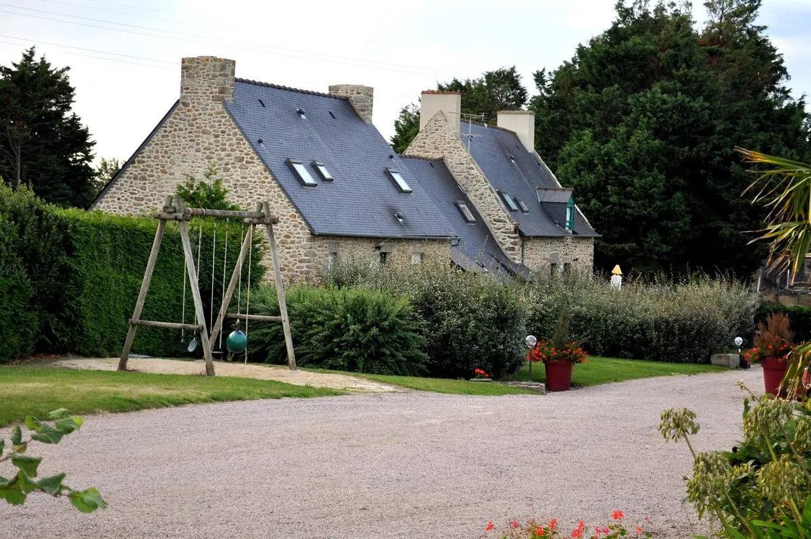
          <div class="stamp">★ Hero</div>
        </div>
        <div class="body">
          <h3><em>Château Richeux</em></h3>
          <div class="where">Le Buot · 5 km from Cancale · D155</div>
          <p>The 12-room Relais & Châteaux on whose ground floor Le Coquillage actually lives. Spice-named rooms, sea views over the bay, and the only way to make the taxi line item disappear. Ranked #1 of 12 hotels in Cancale. The room is the scarce resource — pre-book before the table<sup><a href="https://guide.michelin.com/us/en/hotels-stays/saint-meloir-des-ondes/chateau-richeux-les-maisons-de-bricourt-13607">[11]</a></sup>.</p>
          <dl class="facts">
            <dt>Tariff</dt><dd>~€280–€530 · sea-view +€80–100</dd>
            <dt>Open</dt><dd>Jan 1–25 · Mar 5–Aug 22 · Sep 1–Dec 23</dd>
            <dt>Book</dt><dd>+33 2 99 89 64 76 (table + room, one call)</dd>
          </dl>
        </div>
      </article>

      <article class="postcard">
        <div class="photo">
          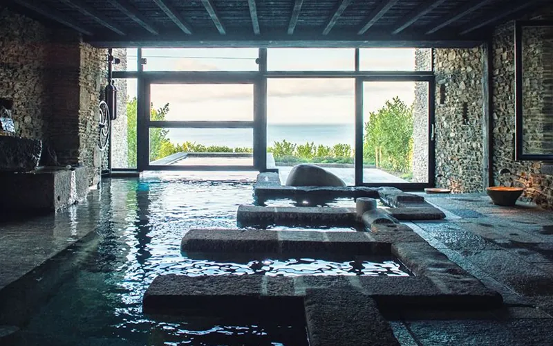
          <div class="stamp">on-site</div>
        </div>
        <div class="body">
          <h3><em>La Ferme du Vent</em></h3>
          <div class="where">400–500 m through the gardens</div>
          <p>Five Celtic <em>kled</em> shelters in wood and raw stone — no Wi-Fi, no TV, by design<sup><a href="https://www.cancale-tourisme.fr/la-ferme-du-vent-cancale/">[21]</a></sup>. Bains Celtiques spa in the old farmhouse.</p>
          <dl class="facts">
            <dt>From</dt><dd>€275 first night · €200 after</dd>
            <dt>Package</dt><dd>€590 incl. 2 dinners, 2 breakfasts</dd>
          </dl>
        </div>
      </article>

      <article class="postcard">
        <div class="photo" style="background: linear-gradient(135deg, #4a6a8a, #1f3a5f);">
          <div style="position:absolute;inset:0;display:flex;align-items:center;justify-content:center;color:#f3e9d2;font-family:'Cormorant Garamond',serif;font-style:italic;font-size:1.6rem;letter-spacing:1px;text-shadow:0 2px 6px rgba(0,0,0,0.5);">Les Rimains</div>
          <div class="stamp">5 km</div>
        </div>
        <div class="body">
          <h3><em>Les Rimains</em></h3>
          <div class="where">62 rue des Rimains · Cancale cliffs</div>
          <p>Four sea-facing rooms in a 1920s house on the Cancale cliffs, once owned by a composer<sup><a href="https://www.maisons-de-bricourt.com/en/page/les-rimains">[14]</a></sup>. Not walkable from Le Buot — short drive or pre-booked taxi.</p>
          <dl class="facts">
            <dt>Rooms</dt><dd>Four, all facing the sea</dd>
            <dt>Booking</dt><dd>Maisons de Bricourt switchboard</dd>
          </dl>
        </div>
      </article>

      <article class="postcard">
        <div class="photo">
          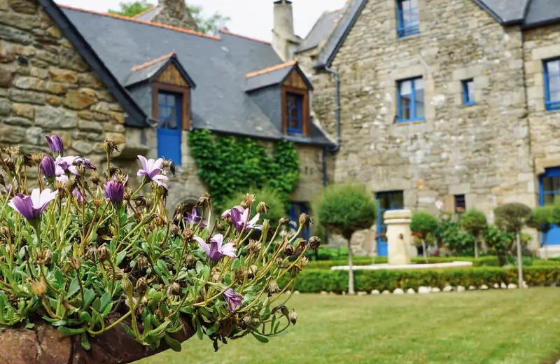
          <div class="stamp">Cancale</div>
        </div>
        <div class="body">
          <h3><em>Manoir des Douets Fleuris</em></h3>
          <div class="where">Cancale · 17th-century granite</div>
          <p>Manor once owned by a French East India Company merchant-weaver family<sup><a href="https://www.manoirdesdouetsfleuris.com/en/">[22]</a></sup>. Heated outdoor pool, hot tub, hospitable hosts.</p>
          <dl class="facts">
            <dt>Style</dt><dd>Chambres d'hôtes, garden setting</dd>
          </dl>
        </div>
      </article>

      <article class="postcard">
        <div class="photo">
          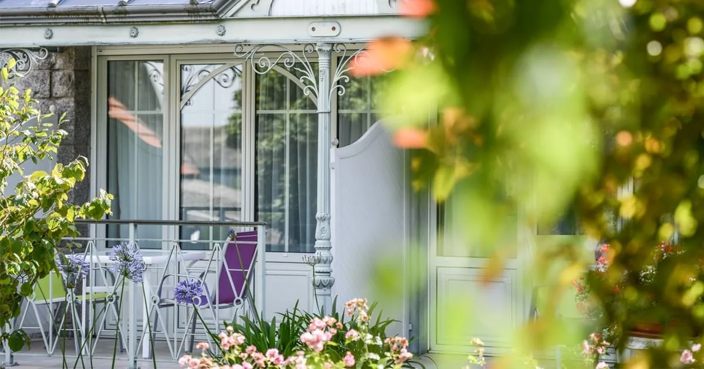
          <div class="stamp">Saint-Méloir</div>
        </div>
        <div class="body">
          <h3><em>Maison Tirel-Guérin</em></h3>
          <div class="where">Domaine du Limonay · 1936</div>
          <p>4-star country estate near the La Gouesnière-Cancale-Saint-Méloir train station<sup><a href="https://www.theoriginalshotels.com/en/hotels/domaine-du-limonay">[23]</a></sup>. Covered heated pool, sauna, tennis. Own one-star restaurant.</p>
          <dl class="facts">
            <dt>Reach</dt><dd>Train-walkable from Paris</dd>
          </dl>
        </div>
      </article>

      <article class="postcard">
        <div class="photo">
          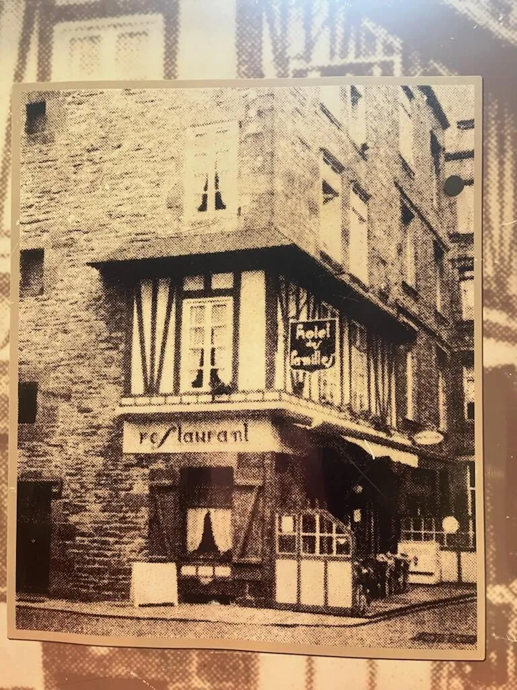
          <div class="stamp">Intra-muros</div>
        </div>
        <div class="body">
          <h3><em>Hôtel Elizabeth</em></h3>
          <div class="where">Saint-Malo intra-muros · oldest in town</div>
          <p>Built in 1600, the oldest dated building inside the walls<sup><a href="https://saintmalo-hotel-elizabeth.com/en/">[15]</a></sup>. Breakfast served in a vaulted stone cellar.</p>
          <dl class="facts">
            <dt>Taxi</dt><dd>~€70–85 return after 19h</dd>
          </dl>
        </div>
      </article>

      <article class="postcard">
        <div class="photo">
          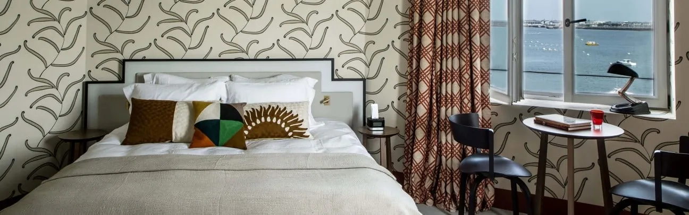
          <div class="stamp">Dinard</div>
        </div>
        <div class="body">
          <h3><em>Castelbrac</em></h3>
          <div class="where">Dinard · 1930s cliff villa</div>
          <p>25 sea-facing rooms in a former marine research station above Prieuré bay<sup><a href="https://www.castelbrac.com/en/">[16]</a></sup>. Private yacht for Channel-Islands excursions.</p>
          <dl class="facts">
            <dt>Crossing</dt><dd>10-min sea-bus to Saint-Malo</dd>
          </dl>
        </div>
      </article>

      <article class="postcard">
        <div class="photo">
          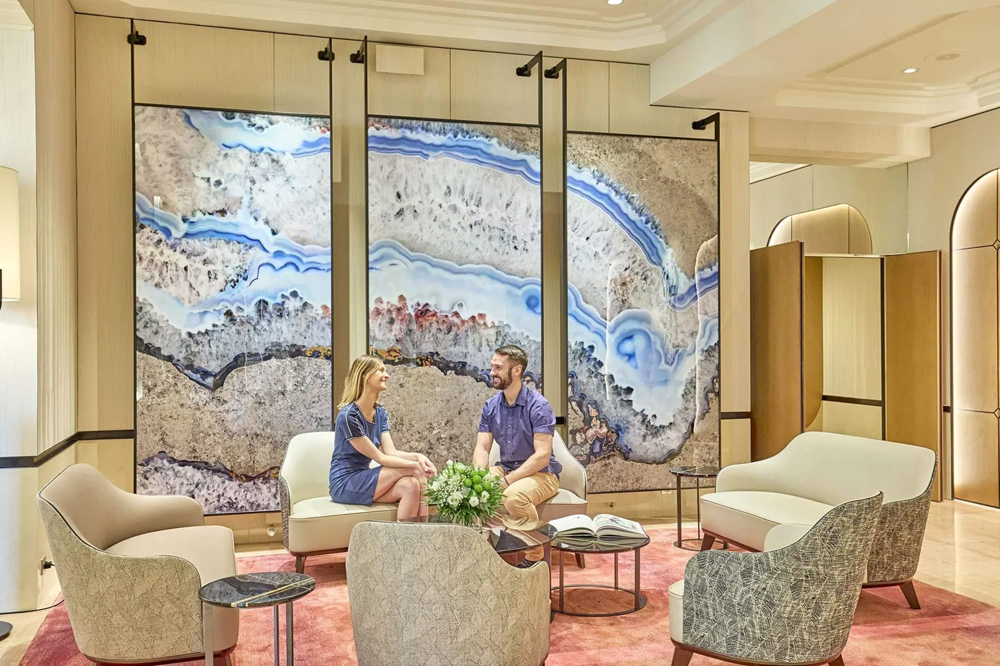
          <div class="stamp">Belle Époque</div>
        </div>
        <div class="body">
          <h3><em>Grand Hôtel des Thermes</em></h3>
          <div class="where">Plage du Sillon · 1881</div>
          <p>177 rooms in pure Belle Époque style facing the great Sillon beach<sup><a href="https://www.le-grand-hotel-des-thermes.fr/en/">[24]</a></sup>. One of France's most established marine thalassotherapy spas.</p>
          <dl class="facts">
            <dt>Spa</dt><dd>Thalasso, since 19th century</dd>
          </dl>
        </div>
      </article>

      <article class="postcard">
        <div class="photo">
          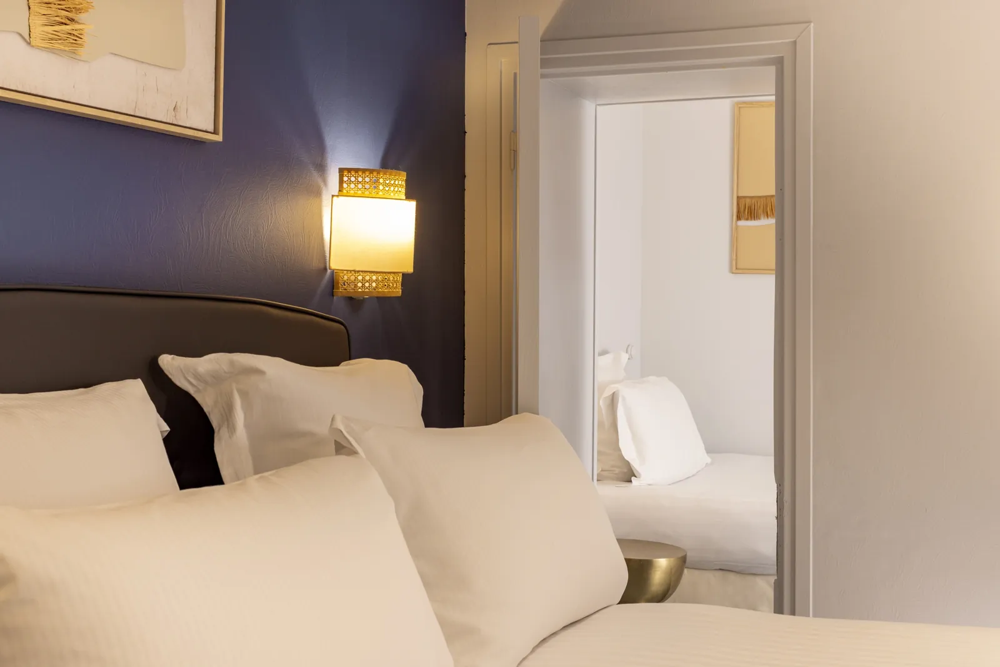
          <div class="stamp">2025 reno</div>
        </div>
        <div class="body">
          <h3><em>Hôtel Le Nautilus</em></h3>
          <div class="where">Saint-Malo intra-muros · 17th c.</div>
          <p>17th-century building inside the walls, fully renovated in 2025 with 15 soundproofed rooms<sup><a href="https://www.hotel-lenautilus-saint-malo.com/en/">[25]</a></sup>. Attic rooms under exposed beams.</p>
          <dl class="facts">
            <dt>Rooms</dt><dd>15, all soundproofed</dd>
          </dl>
        </div>
      </article>

      <article class="postcard">
        <div class="photo">
          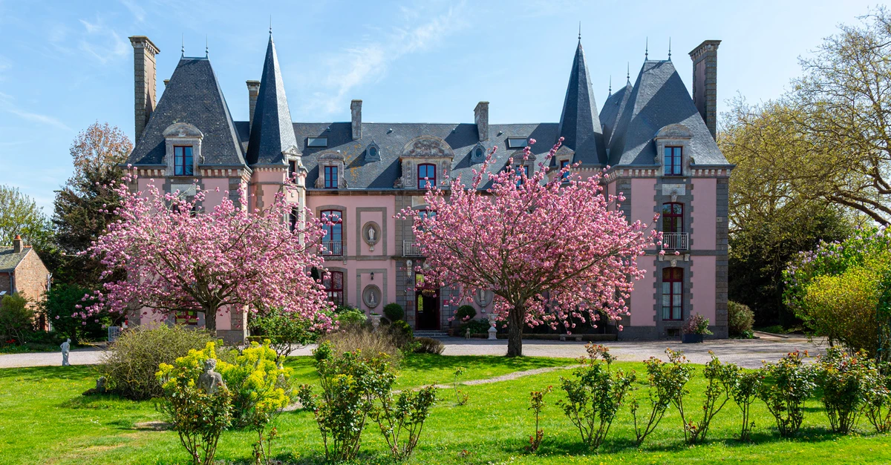
          <div class="stamp">Malouinière</div>
        </div>
        <div class="body">
          <h3><em>Château du Colombier</em></h3>
          <div class="where">Outside the walls · 1715</div>
          <p>Built in 1715 by a Compagnie des Indes ship owner<sup><a href="https://www.saintmalo-hotelcolombier.com/en/">[27]</a></sup>. 6-hectare park with rose garden, chapel and pond.</p>
          <dl class="facts">
            <dt>Setting</dt><dd>Private grounds, garden hush</dd>
          </dl>
        </div>
      </article>
    </div>
  </section>

  <!-- ============== ACTIVITIES POSTCARDS ============== -->
  <section>
    <div class="kicker">III · Que Faire — Dans le Cercle</div>
    <h2>The 30-km circle, <em>tide-gated</em>.</h2>
    <p class="lede">Three sites — Fort National, the walk out to Grand Bé, and Mont-Saint-Michel itself — only reveal themselves when the tide cooperates. Saint-Malo's tidal range exceeds twelve metres; the bay is the most theatrical clock in France.</p>

    <div class="card-grid">
      <article class="postcard hero">
        <div class="photo">
          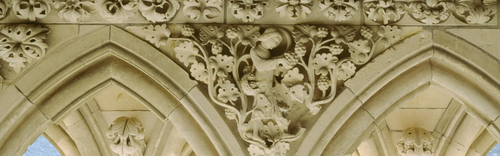
          <div class="stamp">★ Tide-gated</div>
        </div>
        <div class="body">
          <h3><em>Mont-Saint-Michel</em></h3>
          <div class="where">~45 km · 47 min via N176 + D4</div>
          <p>At a coefficient of about 110, the sea fully surrounds the Mount and floods the causeway — the "island again" spectacle<sup><a href="https://en.normandie-tourisme.fr/unmissable-sites/the-mont-saint-michel/high-tides-mont-saint-michel/">[6]</a></sup>. 2026's closest approach is 17–19 April (coefficients 101 / 105 / 104). Abbey entry €16 in season<sup><a href="https://www.abbaye-mont-saint-michel.fr/en/visit/practical-information">[35]</a></sup>.</p>
          <dl class="facts">
            <dt>Park</dt><dd>La Caserne (Beauvoir, 2.5 km from abbey) · €22/24h</dd>
            <dt>Peak 2026</dt><dd>April 18 · coefficient 105 · high tide 08:35</dd>
          </dl>
        </div>
      </article>

      <article class="postcard">
        <div class="photo">
          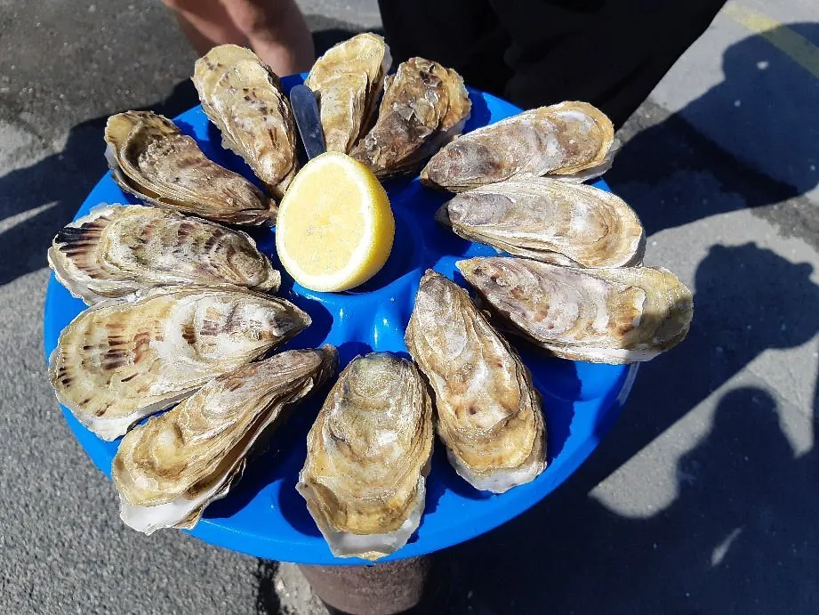
          <div class="stamp">Daily</div>
        </div>
        <div class="body">
          <h3><em>Marché aux Huîtres</em></h3>
          <div class="where">Cancale · Rue des Parcs · Le Port</div>
          <p>Eight independent producers; a dozen <em>huîtres creuses</em> 6–10€, calibre 3 around 6–8€<sup><a href="https://www.cancale-tourisme.fr/marche-aux-huitres-de-cancale/">[29]</a></sup>. Spring/summer hours 9h–19h, extended to 20h in July–August<sup><a href="https://www.marcheauxhuitres-cancale.com/en/informations-en">[28]</a></sup>.</p>
          <dl class="facts">
            <dt>From</dt><dd>~6€ the dozen</dd>
            <dt>Open</dt><dd>Daily, year-round</dd>
          </dl>
        </div>
      </article>

      <article class="postcard">
        <div class="photo" style="background: linear-gradient(135deg, #8a6a4a, #3a2818);">
          <div style="position:absolute;inset:0;display:flex;align-items:center;justify-content:center;color:#f3e9d2;font-family:'Cormorant Garamond',serif;font-style:italic;font-size:1.5rem;letter-spacing:1px;text-shadow:0 2px 6px rgba(0,0,0,0.5);text-align:center;padding:0 12px;">Remparts<br>de Saint-Malo</div>
          <div class="stamp">2 km loop</div>
        </div>
        <div class="body">
          <h3><em>Saint-Malo Ramparts</em></h3>
          <div class="where">Intra-muros · Porte Saint-Thomas</div>
          <p>Free walking loop of about 2 km, roughly 1 hour, with staircases at each gate<sup><a href="https://www.saint-malo-tourisme.co.uk/our-8-preserved-treasures/saint-malo-le-bijou-corsaire/tour-the-ramparts-of-saint-malo/">[30]</a></sup>. Best start at Porte Saint-Thomas behind Place Chateaubriand.</p>
          <dl class="facts">
            <dt>Cost</dt><dd>Free, always open</dd>
          </dl>
        </div>
      </article>

      <article class="postcard">
        <div class="photo">
          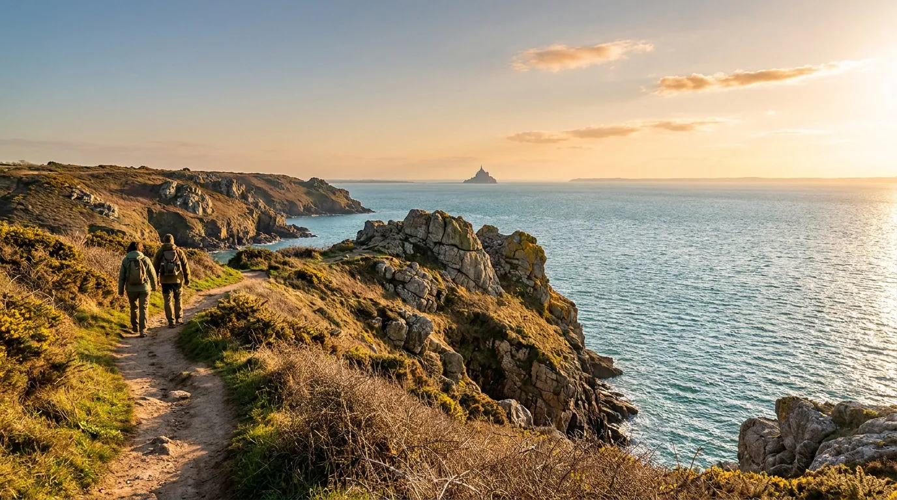
          <div class="stamp">GR34</div>
        </div>
        <div class="body">
          <h3><em>Pointe du Grouin</em></h3>
          <div class="where">Cancale · 7 km clifftop hike</div>
          <p>GR34 from Cancale to the headland — 7 km one-way, ~3 hours. Panoramas of Mont-Saint-Michel on clear days, WWII blockhouses near the semaphore, Île des Landes bird reserve offshore<sup><a href="https://www.cancale-tourisme.fr/randonnee-pointe-du-grouin/">[32]</a></sup>.</p>
          <dl class="facts">
            <dt>Distance</dt><dd>7 km · ~3h moderate</dd>
          </dl>
        </div>
      </article>

      <article class="postcard">
        <div class="photo">
          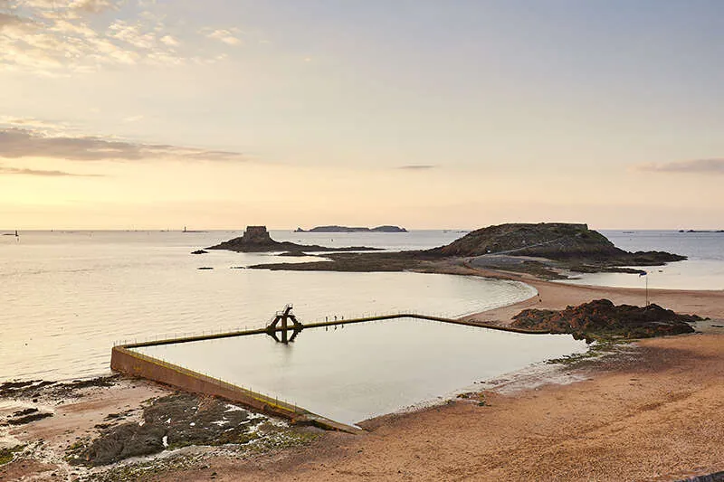
          <div class="stamp">Tidal pool</div>
        </div>
        <div class="body">
          <h3><em>Plage de Bon-Secours</em></h3>
          <div class="where">Saint-Malo intra-muros · Place du Guet</div>
          <p>1937 tidal seawater swimming pool with diving board, inside the ramparts<sup><a href="https://www.saint-malo-tourisme.co.uk/offers/plage-de-bon-secours-saint-malo-en-3646045/">[34]</a></sup>. Refilled twice daily by the tide. Departure point for the walk to Grand Bé.</p>
          <dl class="facts">
            <dt>Pool</dt><dd>Tide-refilled, free access</dd>
          </dl>
        </div>
      </article>

      <article class="postcard">
        <div class="photo">
          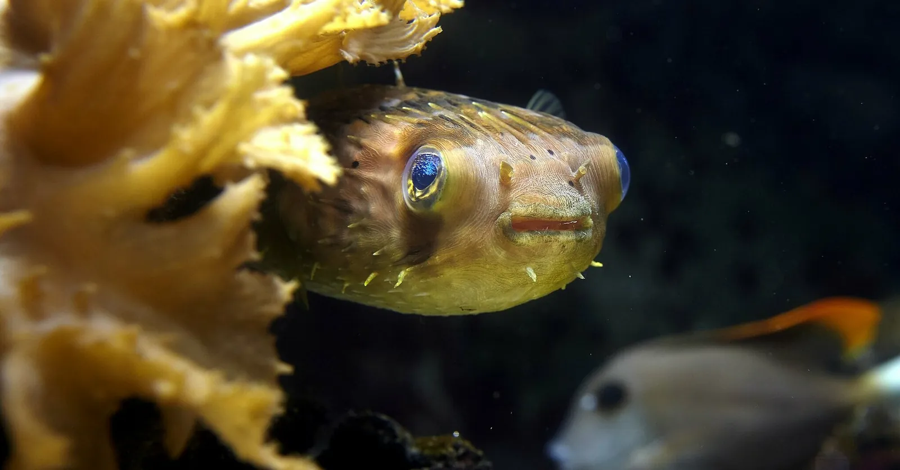
          <div class="stamp">6 km</div>
        </div>
        <div class="body">
          <h3><em>Grand Aquarium</em></h3>
          <div class="where">La Madeleine · 6 km south of intra-muros</div>
          <p>Avenue du Général Patton, reachable by bus line 1 in ~21 minutes<sup><a href="https://www.aquarium-st-malo.com/particulier/visiter/infos-pratiques">[33]</a></sup>. May–June hours 10h–19h daily. Nautibus and Abyssal Descender rides included.</p>
          <dl class="facts">
            <dt>2026 ticket</dt><dd>€19.90 adult · €15.90 child 4–12</dd>
          </dl>
        </div>
      </article>
    </div>
  </section>

  <!-- ============== ROELLINGER ECOSYSTEM ============== -->
  <section class="ecosystem">
    <div class="ecosystem-inner">
      <div class="kicker">IV · L'Écosystème Roellinger</div>
      <h2>A weekend can be <em>entirely Roellinger-shaped</em>, without contrivance.</h2>
      <p class="lede">The family runs Le Coquillage's daytime ecosystem in Cancale too — a pastry-room, a spice laboratory inside the old Maison du Voyageur, a bistro above Port-Mer beach, a cooking school on Place Saint-Méen. Walk the village and you walk through the same kitchen's grammar.</p>

      <div class="eco-grid">
        <article class="eco-card">
          <h4><a href="https://www.maisons-de-bricourt.com/fr/page/grain-de-vanille">Grain de Vanille</a></h4>
          <div class="role">Pastry · Tea-room</div>
          <p>12 place de la Victoire, upper Cancale. Galettes Cancalaises, kouign-amann, spiced chocolates. Open 9h–18h30 continuously, closed Tuesdays<sup><a href="https://www.maisons-de-bricourt.com/fr/page/grain-de-vanille">[5]</a></sup>.</p>
        </article>
        <article class="eco-card">
          <h4><a href="https://www.epices-roellinger.com/en/places">Épices Roellinger</a></h4>
          <div class="role">Spice laboratory</div>
          <p>1 rue Duguesclin, inside the Maison du Voyageur — exotic scents waft from the kitchen lab where spices are roasted, dried, ground and packaged<sup><a href="https://www.epices-roellinger.com/en/places">[17]</a></sup>.</p>
        </article>
        <article class="eco-card">
          <h4><a href="https://www.maisons-de-bricourt.com/fr/places">Le Bistrot de Cancale</a></h4>
          <div class="role">Bistro · Port-Mer</div>
          <p>5 Rue Eugène et Auguste Feyen, above Plage de Port-Mer. Opened June 2022 — the family's casual counterpart to the three-star table<sup><a href="https://www.maisons-de-bricourt.com/fr/places">[18]</a></sup>.</p>
        </article>
        <article class="eco-card">
          <h4><a href="https://www.maisons-de-bricourt.com/fr/places">Cuisine Corsaire École</a></h4>
          <div class="role">Cooking school</div>
          <p>Place Saint-Méen. Day-classes in the Roellinger kitchen tradition. The whole village functions as a single kitchen's outer shell<sup><a href="https://www.maisons-de-bricourt.com/fr/places">[18]</a></sup>.</p>
        </article>
      </div>
    </div>
  </section>

  <!-- ============== TWO CLOCKS ============== -->
  <section class="almanac">
    <div class="kicker">V · L'Almanach des Deux Horloges</div>
    <h2>Two clocks <em>that don't agree</em>.</h2>
    <p class="lede">The activity calendar wants spring tides. The conference calendar wants the academic April–May window. Both peak in the same six weeks of 2026 — and in mid-May they nearly overlap. As of 28 May 2026, all of it is already past.</p>

    <div class="almanac-grid">
      <div class="clock">
        <h3>Les Grandes Marées</h3>
        <div class="where">Tides at Mont-Saint-Michel · 2026</div>
        <ul>
          <li class="past"><span class="date">Apr 17</span><span class="label">Coefficient 101 · 07h55</span><span class="mark">101</span></li>
          <li class="past peak"><span class="date">Apr 18</span><span class="label">Highest tide of the year</span><span class="mark">★ 105</span></li>
          <li class="past"><span class="date">Apr 19</span><span class="label">Coefficient 104 · 09h15</span><span class="mark">104</span></li>
          <li class="past"><span class="date">Apr 20</span><span class="label">Coefficient 99 · 09h55</span><span class="mark">99</span></li>
          <li class="past"><span class="date">Jun 16</span><span class="label">Borderline spring · the year's June peak</span><span class="mark">95</span></li>
        </ul>
        <div style="font-size:0.78rem;margin-top:14px;color:var(--ink-mute);font-style:italic;line-height:1.4;">Below 110, the causeway stays dry — the Mount does not become an island again<sup><a href="https://en.normandie-tourisme.fr/unmissable-sites/the-mont-saint-michel/high-tides-mont-saint-michel/">[6]</a></sup><sup><a href="https://mont-saint-michel-tours.com/mont-saint-michel-tide-schedule/">[7]</a></sup>.</div>
      </div>

      <div class="clock">
        <h3>Le Calendrier Académique</h3>
        <div class="where">Saint-Malo · Palais des Congrès · 2026</div>
        <ul>
          <li class="past"><span class="date">Apr 9–10</span><span class="label"><a href="https://www.7jours.fr/actualites/defense-souverainete-et-numerique-au-coeur-dun-evenement-a-saint-malo/">Trois Océans</a> · sovereignty &amp; defence</span><span class="mark">100</span></li>
          <li class="past"><span class="date">Apr 14–16</span><span class="label"><a href="https://pqcrypto2026.irisa.fr/">PQCrypto 2026</a> · post-quantum crypto</span><span class="mark">~200</span></li>
          <li class="past peak"><span class="date">May 11–14</span><span class="label"><a href="https://cps-iot-week2026.inria.fr/">CPS-IoT Week</a> · <a href="https://hscc.acm.org/2026/">HSCC</a>/<a href="https://2026.rtas.org/">RTAS</a>/<a href="https://sensys.acm.org/2026/">SenSys</a></span><span class="mark">★ 1k+</span></li>
          <li><span class="date">Sep 28–29</span><span class="label"><a href="https://digital-benchmark-2026.ebg.net/">Digital Benchmark</a> · invite-only execs</span><span class="mark">~300</span></li>
          <li><span class="date">→ 2027</span><span class="label">Plan mid-May for tide-and-conference overlap</span><span class="mark">★</span></li>
        </ul>
        <div style="font-size:0.78rem;margin-top:14px;color:var(--ink-mute);font-style:italic;line-height:1.4;">Saint-Malo is the only IT-conference hub in the 30 km circle. The next upcoming anchor is <a href="https://digital-benchmark-2026.ebg.net/">Digital Benchmark</a> on 28–29 September — invitation-only, not a drop-in<sup><a href="https://digital-benchmark-2026.ebg.net/">[10]</a></sup>.</div>
      </div>
    </div>

    <div class="overlap">
      A date-flexible booking in 2027 should target <b>mid-May</b> — the only slot where spring tides and academic conference energy overlap. A date-locked weekend this autumn should pre-book Château Richeux before the restaurant. <em>The room, not the table, is the scarce resource.</em>
    </div>
  </section>

  <!-- ============== NUMBER PLATE ============== -->
  <section class="number-plate">
    <div class="kicker">VI · Un Seul Numéro</div>
    <h2>Both reservations<br><em>ring the same bell.</em></h2>
    <div class="phone">+33 2 99 89 64 76</div>
    <div class="rule"></div>
    <p class="phone-note">The Maisons de Bricourt switchboard takes the table at <a href="https://www.maisons-de-bricourt.com/en/page/le-coquillage">Le Coquillage</a> <em>and</em> the room at <a href="https://www.maisons-de-bricourt.com/en/page/chateau-richeux">Château Richeux</a>, <a href="https://www.maisons-de-bricourt.com/en/page/ferme-du-vent">La Ferme du Vent</a>, or <a href="https://www.maisons-de-bricourt.com/en/page/les-rimains">Les Rimains</a> — one call settles the entire evening.<sup><a href="https://www.maisons-de-bricourt.com/en/page/le-coquillage">[2]</a></sup></p>
  </section>

  <!-- ============== CHAPTERS / SIBLING RAIL ============== -->
  <section class="chapters">
    <div class="kicker">VII · Les Quatre Carnets</div>
    <h2>Four chapters <em>beneath the cover</em>.</h2>
    <p class="lede">This folio is the synthesis — the underlying research lives in four parallel notebooks, each with its own citations.</p>

    <div class="chapter-grid">
      <a class="chapter" href="../walking-distance-lodging-at-or-near-le-coquillage/">
        <div class="ch-num">Carnet I</div>
        <h4>Walking-distance lodging at or near Le Coquillage</h4>
        <p>Six options inside a 1 km radius, ranked by price and proximity.</p>
        <div class="depth">Survey · 18 sources</div>
      </a>
      <a class="chapter" href="../special-character-lodging-within-taxi-range-of-le-coquillage/">
        <div class="ch-num">Carnet II</div>
        <h4>Special-character lodging within taxi range</h4>
        <p>Eleven hotels and chambres d'hôtes from on-site to a 30-min taxi ride.</p>
        <div class="depth">Survey · 23 sources</div>
      </a>
      <a class="chapter" href="../day-trips-and-activities-within-30-km-of-le-coquillage/">
        <div class="ch-num">Carnet III</div>
        <h4>Day-trips and activities within 30 km</h4>
        <p>Saint-Malo's ramparts, Cancale's oysters, Dinard's Belle Époque, Mont-Saint-Michel and the heritage triangle.</p>
        <div class="depth">Expedition · 73 sources</div>
      </a>
      <a class="chapter" href="../it-conferences-and-tech-events-within-30-km-of-le-coquillage/">
        <div class="ch-num">Carnet IV</div>
        <h4>IT conferences and tech events within 30 km</h4>
        <p>Saint-Malo is the only nearby hub — 2026 was front-loaded April–May. Next: <a href="https://digital-benchmark-2026.ebg.net/">Digital Benchmark</a>, September.</p>
        <div class="depth">Survey · 17 sources</div>
      </a>
    </div>
  </section>

  <div class="colophon">
    <span>Maisons de la Baie</span><em>—</em><span>Saint-Méloir-des-Ondes · 2026</span><em>—</em><span>131 sources · 28 min</span>
  </div>

</article>
